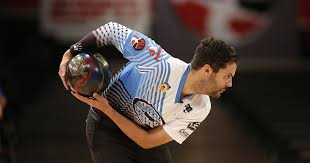
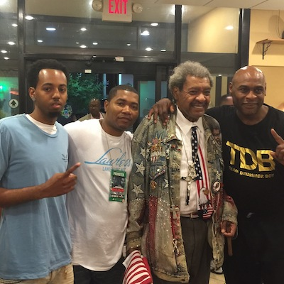
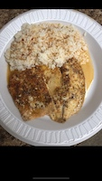

Things You Didnt Know
My interests are bowling, boxing, and food. I love cooking, but not the extent of going to culinary school.
Bowling
I look up to Jason Belmonte's two-hand style bowling. I brought one the bowling ball that he scored a 300 with, and also won many competitions. I was self-taught the two-hand style just by watching my favorite bowler and never bowled in any bowling leagues.
Boxing
I’ve been fighting all my life since I was 10 years old. I never trained in the boxing world, but I’ve been street fighting. As I got older, I wanted to get into boxing, and once I did, I enjoyed it. I started training with Heavyweight Champion “Oliver McCall” who knocked out Lenox Lewis for the heavyweight title. I and Oliver developed a bond and my uncle, and he were best friends and I didn’t know it. Also, me and Don King are friends as well.
Cooking
I love to cook and enjoy cooking for others. I started cooking when I was in high school because my mom would be at work the majority of the time. I’m the only child, so I didn’t have any older siblings, but I had older cousins. My older cousins don’t know how to cook. So, one day I went on YouTube to search how to cook one of my favorite meals, and from that point on I fell in love with cooking. My favorite dish to make is tropical talipa, and homemade butter sauce.
